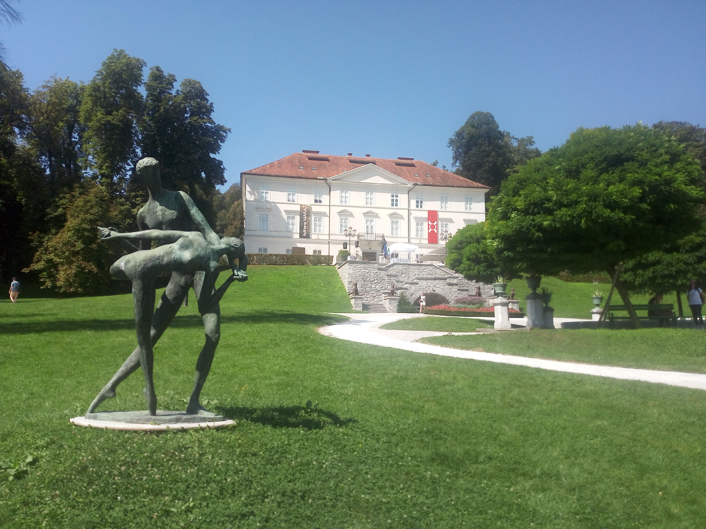

Ljubljana, Slovenia
Slovenia · Central Slovenia
Ljubljana, the charming capital of Slovenia, is a city where history, nature and everyday life come together in a beautiful harmony. Its picturesque old town, elegant bridges and colourful riverside streets create an inviting atmosphere, while the Ljubljanica River flows through the heart of the city. Overlooked by the impressive Ljubljana Castle and surrounded by lush green spaces, the city offers a wonderful balance between historic charm and modern urban life. From its lively cafés and beautiful architecture to the peaceful paths of Tivoli Park, Ljubljana has a special character that makes exploring it a truly memorable experience.

Tivoli Park
Explore my personal photographs of Tivoli Park in Ljubljana.
Explore Photos ↗